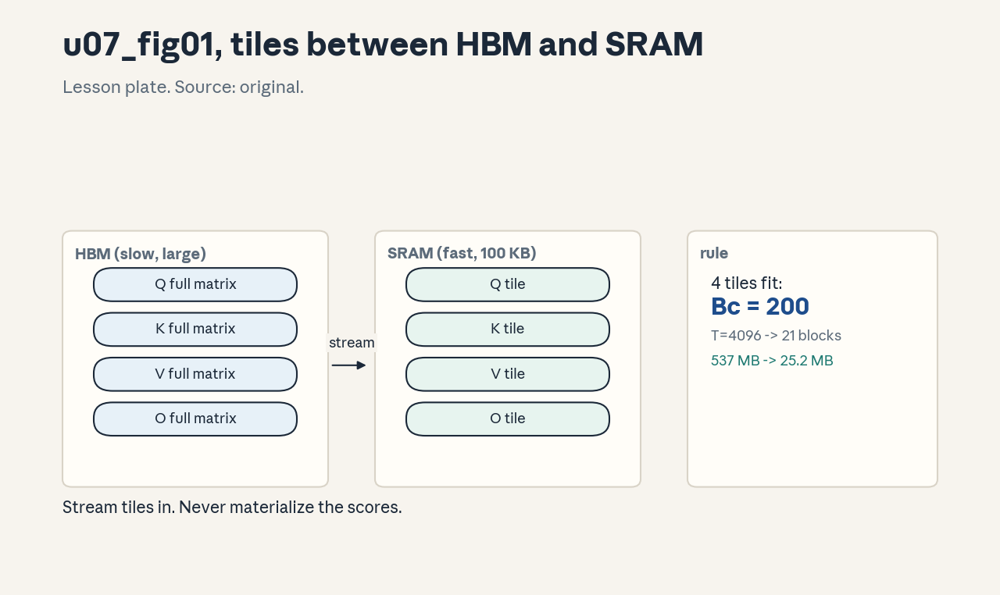
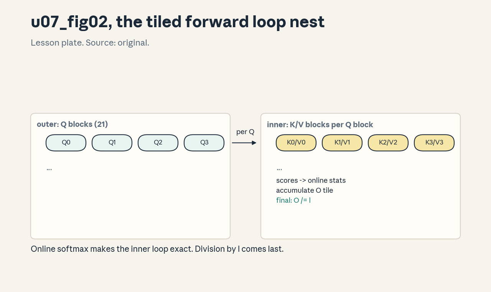
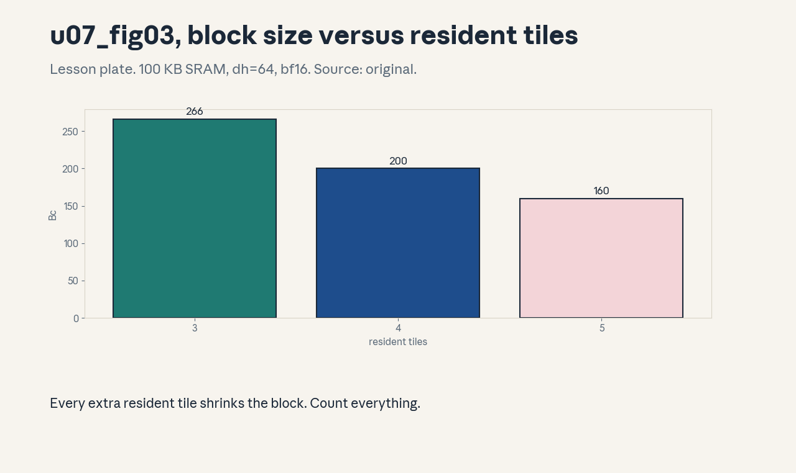

U07 · Kernels and IO-aware attention
U07 , Kernels and IO-aware attention
Prerequisites: P06, P07, P14, P15. Bridge links in ../prerequisites.md.
Session: cross-cutting branch (kernel work reported across course
sessions, exact mapping in ../course_map.md).
Claim class: REQUESTED-BRANCH. All leaves PLANNED / SOURCE ATTRIBUTION
PENDING. Notation: see ../notation_and_shapes.md.
Standing note
No GPU on this box. Kernel algorithms are studied as numpy tiled reference implementations on CPU, every number is computed, and the lesson states the hardware assumptions (100 KB toy SRAM budget) where used. Triton code is read and written as pseudocode, not executed.
Local remediation , tiling and the memory wall
Read this if diagnostic items D9 or D12 were not full marks. Fast memory (SRAM) is small, slow memory (HBM) is large. A kernel that streams data once from HBM and reuses it in SRAM beats one that re-reads it, even with identical FLOPs. Tiling splits the work into blocks that fit in SRAM, the online softmax lets attention tile over the sequence.
Worked check: materializing (B=2,h=8,T=4096) bf16 scores moves 537
MB, streaming Q/K/V once moves 25.2 MB (from
assets/compute_u07.py, executed 2026-10-06).
Assessment: with a 100 KB SRAM budget, dh=64, bf16, and 4 tiles
(Q,K,V,O) resident, what block size fits? Key: ../keys/u07_answers.md
R1.
C01: Tiling for the memory hierarchy
Leaf id cs336-U07-C01. Claim class REQUESTED-BRANCH.
Status PLANNED / SOURCE ATTRIBUTION PENDING.
-
Source mapping, scope, objectives, dependencies. Branch. Scope: blocking computation for SRAM. Objectives: size a tile from the SRAM budget, count HBM passes. Depends on P06, U06-C02.
-
Motivating question and toy. Question: how big a block fits? Toy from
compute_u07.py: 100 KB SRAM, dh=64, bf16, 4 resident tiles -> Bc = 200, T=4096 needs 21 blocks. -
Mental model. SRAM holds the working tiles, HBM holds the matrices. The tile size is the largest block with all live tiles fitting: 4Bcdh*bytes <= SRAM. Bigger tiles mean fewer HBM passes and better reuse.
-
Objects, symbols, units, shapes, assumptions. Bc, Br: block sizes. Assumption: the 100 KB toy budget.
-
Derivation / mechanism. Bytes resident = tiles * Bc * dh * bytes. Solve for Bc. The loop nest streams K/V blocks for each Q block, total HBM reads scale with the block count.
-
Computed example. From
assets/compute_u07.py(executed 2026-10-06): Bc=200, 21 blocks for T=4096. -
Algorithm and reference implementation.
tile_size(sram, dh, bytes, tiles): integer division. About 3 lines. -
Correctness checks and expected output. Bc4dh*bytes <= SRAM, Bc+1 violates it. Expected outputs in the lab key.
-
Costs. Tiling is pure win on memory-bound ops, the cost is code complexity.
-
Nearest alternative and selection boundary. No tiling (simple, slow). Every fast kernel tiles.
-
Failure case and counterexample. Tiles sized for the wrong SRAM: silent spilling to slower memory, 2-5x slower with correct results. The assumption “the budget is right” breaks across devices, query it, do not hardcode.
-
Research reading and falsifiable extension. Reading: tiled GEMM literature (primary: vendor guides). Extension: recompute Bc for dh=128, hypothesis: halves to 100.
-
Assessment. (a) Recall: the tile-size formula. (b) Oral ladder: define the resident set, compute Bc, justify the 4 tiles, implement, compare with no tiling, debug the spill, critique the fixed budget, design the dh=128 check. (c) Transfer: SRAM doubles. What changes, and what does not? Answers:
../keys/u07_answers.mdA1. -
Lab and exercises. Lab U07 task 1 sizes tiles and counts blocks. See
../labs/u07_lab.md. -
Visuals. Figure u07_fig01: lesson plate, tiles moving between HBM and SRAM. Source: original. Render:
assets/render_u07.py.

C02: Online softmax
Leaf id cs336-U07-C02. Claim class REQUESTED-BRANCH.
Status PLANNED / SOURCE ATTRIBUTION PENDING.
-
Source mapping, scope, objectives, dependencies. Branch. Scope: the rescaling trick. Objectives: derive the online update, prove equivalence. Depends on P05, U05-C01.
-
Motivating question and toy. Question: softmax needs the max first, so how can it stream? Toy from
compute_u07.py: blocks [1,2],[3,4] give m=4.0, l=1.5530, exactly matching the full computation. -
Mental model. Keep a running max m and normalizer l. A new block with max mb rescales: m’ = max(m, mb), l’ = l*exp(m-m’) + sum(exp(block-m’)). The rescaling corrects the old terms to the new max.
-
Objects, symbols, units, shapes, assumptions. m: scalar, l: scalar. Assumption: exact arithmetic (fp32 accumulation, C11).
-
Derivation / mechanism. exp(x-m’) = exp(x-m)*exp(m-m’): the alpha factor rescales both the accumulator and the normalizer. Induction over blocks gives the exact softmax.
-
Computed example. From
assets/compute_u07.py(executed 2026-10-06): m=4.0, l=1.5530, match True. -
Algorithm and reference implementation.
online_softmax( blocks): the loop. About 8 lines. -
Correctness checks and expected output. Matches the naive softmax for any block split, including block size 1. Expected outputs in the lab key.
-
Costs. O(T) extra exp calls for the rescaling, negligible.
-
Nearest alternative and selection boundary. Two-pass softmax (needs the full row in SRAM). Online is the streaming answer.
-
Failure case and counterexample. Accumulating l in fp16: the rescaling underflows and rows go to nan. The assumption “any dtype works” breaks, the statistics stay in fp32.
-
Research reading and falsifiable extension. Reading: the online-softmax derivation (primary: FlashAttention paper sections). Extension: verify block-size-1 equivalence, hypothesis: exact.
-
Assessment. (a) Recall: the update equations. (b) Oral ladder: define the rescaling, hand-run the toy, justify alpha, implement, compare with two-pass, debug the fp16 l, critique the exactness claim, design the block-1 check. (c) Transfer: the row has 1M elements. What changes? Answers:
../keys/u07_answers.mdA2. -
Lab and exercises. Lab U07 task 2 implements online softmax and the equivalence checks. See
../labs/u07_lab.md. -
Visuals. Audit row: the rescaling diagram (two blocks, alpha arrow). No figure, tabular claim.
C03: FlashAttention forward
Leaf id cs336-U07-C03. Claim class REQUESTED-BRANCH.
Status PLANNED / SOURCE ATTRIBUTION PENDING.
-
Source mapping, scope, objectives, dependencies. Branch. Scope: the tiled forward pass. Objectives: write the algorithm, state the HBM savings. Depends on C01, C02.
-
Motivating question and toy. Question: attention without the T^2 matrix? Toy from
compute_u07.py: the tiled forward matches naive to 3.33e-16, traffic 537 MB -> 25.2 MB. -
Mental model. Outer loop over Q blocks (each fits in SRAM). Inner loop over K/V blocks: compute scores, update the online softmax statistics, accumulate O. Never materialize the full scores. Output rescaling happens once at the end per row.
-
Objects, symbols, units, shapes, assumptions. Q,K,V,O tiles: (Bc,dh). m,l per row. Assumption: fp32 accumulators.
-
Derivation / mechanism. The inner loop is exactly the online softmax with the V-weighted sum folded in: acc’ = acc*alpha + exp(S-m’)V. Dividing by l at the end gives softmax(S)V.
-
Computed example. From
assets/compute_u07.py(executed 2026-10-06): match True, max deviation 3.33e-16, 537 MB versus 25.2 MB. -
Algorithm and reference implementation.
flash_attn_fwd(Q,K,V, Bc): the nested loops. About 15 lines of numpy. -
Correctness checks and expected output. Matches naive for random small inputs, causal variant matches the masked naive. Expected outputs in the lab key.
-
Costs. Same FLOPs as naive, HBM traffic O(T) instead of O(T^2). SRAM-sized tiles bound the inner loop.
-
Nearest alternative and selection boundary. Naive attention (simple, memory-bound), linear attention (U04, approximate). FlashAttention is exact and IO-aware.
-
Failure case and counterexample. Forgetting the final division by l: outputs are scaled by the row normalizer and the model trains on garbage. The assumption “acc is the answer” breaks, the division is load-bearing.
-
Research reading and falsifiable extension. Reading: the FlashAttention paper (Dao et al., 2022, primary). Extension: verify the causal variant, hypothesis: matches masked naive.
-
Assessment. (a) Recall: the loop nest. (b) Oral ladder: define the tile roles, trace one inner step, justify the rescaling, implement, compare traffic, debug the missing division, critique the fp32 assumption, design the causal check. (c) Transfer: T=128k. What dominates, and what breaks? Answers:
../keys/u07_answers.mdA3. -
Lab and exercises. Lab U07 task 3 implements the tiled forward and the traffic comparison. See
../labs/u07_lab.md. -
Visuals. Figure u07_fig02: lesson plate, the tiled forward loop nest. Source: original. Render:
assets/render_u07.py.

C04: FlashAttention backward
Leaf id cs336-U07-C04. Claim class REQUESTED-BRANCH.
Status PLANNED / SOURCE ATTRIBUTION PENDING.
-
Source mapping, scope, objectives, dependencies. S-branch. Scope: the tiled backward pass. Objectives: explain recomputation, state the stored statistics. Depends on C03, P11.
-
Motivating question and toy. Question: the forward never stored the scores, so what does backward use? Answer: it stores only m and l per row (O(T)) and recomputes the scores tiles in the backward pass.
-
Mental model. Backward needs dO, then per tile: recompute S, P=softmax(S) from stored m/l, accumulate dQ += P^T dV-ish terms and dK, dV. Recomputation trades FLOPs (cheap) for HBM (the bottleneck).
-
Objects, symbols, units, shapes, assumptions. Stored: m, l (T floats each), O, dO. Assumption: recompute is cheaper than storing.
-
Derivation / mechanism. dV = P^T dO, dP = dO V^T, dS = P(dP - rowsum(dPP)), dQ = dS K, dK = dS^T Q. Each tiled with the same blocking.
-
Computed example. Lab: tiled-style dQ matches finite differences to 3.41e-07 max relative error on the toy.
-
Algorithm and reference implementation.
flash_attn_bwd(...): the tiled loops. About 25 lines of numpy. -
Correctness checks and expected output. Matches finite- difference gradients (U05-C12) on the toy. Expected outputs in the lab key.
-
Costs. ~2.5x the forward FLOPs (recompute), HBM stays O(T).
-
Nearest alternative and selection boundary. Storing scores (simple, O(T^2) memory). Recompute is the IO-aware answer.
-
Failure case and counterexample. Storing m/l in fp16: recomputed P mismatches and gradients are wrong. The assumption “statistics are cheap to store” needs the fp32 qualifier.
-
Research reading and falsifiable extension. Reading: the FlashAttention backward derivation (primary). Extension: check dK against finite differences, hypothesis: passes.
-
Assessment. (a) Recall: what is stored and what is recomputed. (b) Oral ladder: define the tradeoff, write the dV line, justify recompute, implement, compare memory, debug the fp16 statistics, critique the cheap-recompute assumption, design the dK check. (c) Transfer: SRAM halves. What changes in backward? Answers:
../keys/u07_answers.mdA4. -
Lab and exercises. Lab U07 task 4 implements the tiled backward and checks it. See
../labs/u07_lab.md. -
Visuals. Audit row: the stored-vs-recomputed table. No figure, tabular claim.
C05: Block-sparse patterns
Leaf id cs336-U07-C05. Claim class REQUESTED-BRANCH.
Status PLANNED / SOURCE ATTRIBUTION PENDING.
-
Source mapping, scope, objectives, dependencies. S-branch. Scope: skipping blocks. Objectives: define a block mask, state the savings condition. Depends on C03, U04-C02.
-
Motivating question and toy. Question: what if most blocks are masked anyway? Toy: a sliding-window mask at block granularity skips (21-3)/21 of the inner loop for Bc=200, T=4096.
-
Mental model. The mask becomes a block mask: fully-masked blocks are skipped entirely (no loads, no math). Savings need coarse structure, random sparsity does not tile well.
-
Objects, symbols, units, shapes, assumptions. Block mask: (T/Bc, T/Bc) booleans. Assumption: the pattern is block-aligned.
-
Derivation / mechanism. Skipped fraction = masked blocks / total blocks. The inner loop checks the block mask before loading.
-
Computed example. Lab: window w=3 blocks of 21: 18 skipped, 6x fewer inner iterations (causal + window).
-
Algorithm and reference implementation. The block-mask check inside the tiled forward. About 5 added lines.
-
Correctness checks and expected output. Matches the dense masked naive on the unmasked entries. Expected outputs in the lab key.
-
Costs. Savings proportional to skipped blocks, the mask check is free.
-
Nearest alternative and selection boundary. Dense tiled (simpler), custom sparse kernels (more general). Block-sparse for structured patterns.
-
Failure case and counterexample. A checkerboard mask at element granularity: no block is fully masked, zero savings, plus mask overhead. The assumption “sparsity helps” breaks without block structure.
-
Research reading and falsifiable extension. Reading: block-sparse attention papers (primary). Extension: measure the skip fraction for strided patterns, hypothesis: poor.
-
Assessment. (a) Recall: the block-mask rule. (b) Oral ladder: define block alignment, compute the skip fraction, justify the load skip, implement, compare with dense, debug the checkerboard, critique the structure assumption, design the strided check. (c) Transfer: the mask is data-dependent. What breaks? Answers:
../keys/u07_answers.mdA5. -
Lab and exercises. Lab U07 task 5 implements block skipping. See
../labs/u07_lab.md. -
Visuals. Audit row: the pattern table (pattern, skip fraction). No figure, tabular claim.
C06: Kernel fusion
Leaf id cs336-U07-C06. Claim class REQUESTED-BRANCH.
Status PLANNED / SOURCE ATTRIBUTION PENDING.
-
Source mapping, scope, objectives, dependencies. S-branch. Scope: merging elementwise passes. Objectives: compute the traffic savings, state the fusion rule. Depends on U06-C03.
-
Motivating question and toy. Question: dropout, add, norm: three passes or one? Toy from
compute_u07.py: 101 MB separate versus 34 MB fused for (B=2,T=4096,d=2048) bf16. -
Mental model. Elementwise chains are memory-bound: each pass streams the tensor. Fusing them into one kernel streams it once. The rule: fuse while the working set fits in SRAM and the ops stay elementwise.
-
Objects, symbols, units, shapes, assumptions. Bytes per pass. Assumption: the fused working set fits.
-
Derivation / mechanism. Traffic = passes * elements * bytes. Fusing n passes into 1 divides traffic by n.
-
Computed example. From
assets/compute_u07.py(executed 2026-10-06): 101 MB versus 34 MB. -
Algorithm and reference implementation. The fused loop pseudocode: load tile, apply the chain, store. About 8 lines.
-
Correctness checks and expected output. Fused matches sequential within fp tolerance. Expected outputs in the lab key.
-
Costs. 3x traffic cut here, compile/code complexity.
-
Nearest alternative and selection boundary. Framework fusion (torch.compile) versus hand fusion. Hand fusion for the hot path.
-
Failure case and counterexample. Fusing a reduction across the sequence with an elementwise op: the reduction needs the whole row, breaking the tile-at-a-time pattern. The assumption “any chain fuses” breaks at reductions, they need their own blocking (C02).
-
Research reading and falsifiable extension. Reading: compiler fusion literature (primary: framework docs). Extension: fuse the toy chain in numpy and compare, hypothesis: matches.
-
Assessment. (a) Recall: the fusion rule. (b) Oral ladder: define the traffic model, compute the toy, justify the SRAM condition, sketch the fused loop, compare with torch.compile, debug the reduction case, critique the always-fuse instinct, design the numpy check. (c) Transfer: the chain includes a softmax. What changes? Answers:
../keys/u07_answers.mdA6. -
Lab and exercises. Lab U07 task 6 fuses a toy chain. See
../labs/u07_lab.md. -
Visuals. Audit row: the pass-count table. No figure, tabular claim.
C07: Triton programming model
Leaf id cs336-U07-C07. Claim class REQUESTED-BRANCH.
Status PLANNED / SOURCE ATTRIBUTION PENDING.
-
Source mapping, scope, objectives, dependencies. S-branch. Scope: the tile programming model. Objectives: read a Triton kernel, map blocks to program ids. Depends on C01, P14.
-
Motivating question and toy. Question: how do you write a tiled kernel without CUDA? Toy: a Triton-style vectorized add expressed as numpy blocks, annotated line by line.
-
Mental model. Triton: each program instance handles one tile,
tl.arangebuilds indices,tl.load/storemove tiles, the compiler handles the rest. The program id maps to the tile index: the grid is the loop over tiles. -
Objects, symbols, units, shapes, assumptions. BLOCK: tile size (power of two). Assumption: the model, not execution (no Triton on this box).
-
Derivation / mechanism. pid = tl.program_id(0), offs = pid*BLOCK + tl.arange(0, BLOCK), x = tl.load(ptr+offs, mask=…). The mask handles the tail.
-
Computed example. Lab: the numpy-block add with mask, annotated against the Triton lines.
-
Algorithm and reference implementation. Pseudocode only (not executed): the add kernel in 10 lines.
-
Correctness checks and expected output. The numpy analog matches plain add including the tail. Expected outputs in the lab key.
-
Costs. None on this box, on device, the compiler’s tiling choices.
-
Nearest alternative and selection boundary. CUDA (full control, more code), torch.compile (no kernel code). Triton for custom tiled ops.
-
Failure case and counterexample. A BLOCK that is not a power of two: the compiler pads and the mask logic silently covers garbage. The assumption “any BLOCK works” breaks, powers of two are the contract.
-
Research reading and falsifiable extension. Reading: the Triton tutorial (primary). Extension: annotate a softmax kernel, hypothesis: the online form appears.
-
Assessment. (a) Recall: the pid-to-tile mapping. (b) Oral ladder: define the grid, trace the mask, justify the power of two, annotate, compare with CUDA, debug the tail, critique the no-execution limit, design the softmax annotation. (c) Transfer: the kernel needs two tiles resident. What changes? Answers:
../keys/u07_answers.mdA7. -
Lab and exercises. Lab U07 task 7 annotates the numpy analog. See
../labs/u07_lab.md. -
Visuals. Audit row: the pid mapping table. No figure, tabular claim.
C08: Correctness against a reference
Leaf id cs336-U07-C08. Claim class REQUESTED-BRANCH.
Status PLANNED / SOURCE ATTRIBUTION PENDING.
-
Source mapping, scope, objectives, dependencies. S-branch. Scope: verifying tiled code. Objectives: state the reference- comparison protocol. Depends on U05-C12.
-
Motivating question and toy. Question: the tiled kernel runs, is it right? Toy: the tiled forward matches naive to 3.33e-16 (from
compute_u07.py). -
Mental model. Every tiled kernel gets a naive reference on small random inputs. Compare with allclose at a stated tolerance. Test the tails (non-divisible T), the causal variant, and block-size 1.
-
Objects, symbols, units, shapes, assumptions. Tolerance (1e-5 fp32, tighter fp64). Assumption: the naive reference is itself correct (checked by hand on tiny inputs).
-
Derivation / mechanism. The protocol: (1) tiny hand case, (2) random small vs naive, (3) edge shapes, (4) dtype variants. Each layer catches different bugs.
-
Computed example. From
assets/compute_u07.py(executed 2026-10-06): max deviation 3.33e-16 on the toy. -
Algorithm and reference implementation.
check_kernel(tiled, naive, shapes): the loop. About 10 lines. -
Correctness checks and expected output. Passes on correct code, the lab’s broken variant (missing rescale) fails loudly. Expected outputs in the lab key.
-
Costs. Minutes on CPU, the alternative is wrong kernels.
-
Nearest alternative and selection boundary. Device-side printf debugging (slower). Reference comparison is the first tool.
-
Failure case and counterexample. Comparing in fp16 with a 1e-8 tolerance: fails on correct code. The assumption “tight is better” breaks, the tolerance must match the dtype.
-
Research reading and falsifiable extension. Reading: testing guides (primary: framework docs). Extension: break the rescale deliberately, hypothesis: the check catches it.
-
Assessment. (a) Recall: the four protocol layers. (b) Oral ladder: define the tolerance, run the toy, justify the tails, implement, compare with device debugging, debug the fp16 tolerance, critique the reference assumption, design the break test. (c) Transfer: the kernel passes fp32 but fails bf16. What next? Answers:
../keys/u07_answers.mdA8. -
Lab and exercises. Lab U07 task 8 runs the protocol. See
../labs/u07_lab.md. -
Visuals. Audit row: the protocol checklist. No figure, tabular claim.
C09: Benchmark claims as source-verification branches
Leaf id cs336-U07-C09. Claim class REQUESTED-BRANCH.
Status PLANNED / SOURCE ATTRIBUTION PENDING.
-
Source mapping, scope, objectives, dependencies. S-branch. Scope: kernel speedup claims. Objectives: apply the verification protocol to a “Nx faster” claim. Depends on U06-C05, U06-C09.
-
Motivating question and toy. Question: “3x faster attention”: faster than what? Toy: the lab dissects the claim into baseline, shapes, dtype, and conditions.
-
Mental model. A speedup claim is a ratio: optimized over baseline under conditions. Verify the baseline (is it the naive or the best known?), the shapes (long or short context?), and the dtype. The 537->25.2 MB traffic ratio bounds the plausible speedup.
-
Objects, symbols, units, shapes, assumptions. Ratios with conditions. Assumption: none unchecked.
-
Derivation / mechanism. The protocol from U06-C09 applied to kernels: quote, reproduce conditions, measure, explain the gap. The traffic ratio gives the memory-bound speedup ceiling.
-
Computed example. Lab: the toy claim “21x less traffic” (537/25.2) with the stated shapes.
-
Algorithm and reference implementation. The claim template filled for the traffic ratio. Written exercise.
-
Correctness checks and expected output. Every ratio carries its shapes and dtype. Expected outputs in the lab key.
-
Costs. An hour of checking beats misallocated tuning.
-
Nearest alternative and selection boundary. Independent reproduction (stronger, slower). The template is the first pass.
-
Failure case and counterexample. A claim measured against an unoptimized baseline: the ratio is real and meaningless. The assumption “faster means better” breaks, the baseline defines the claim.
-
Research reading and falsifiable extension. Reading: the FlashAttention benchmarks as primary sources for conditions. Extension: fill the template for one published claim, hypothesis: the shapes explain the ratio.
-
Assessment. (a) Recall: the ratio anatomy. (b) Oral ladder: define the baseline, dissect the toy, justify the traffic ceiling, fill the template, compare with reproduction, debug the weak baseline, critique the template, design the fill. (c) Transfer: a vendor claims 2x on your shapes. What do you ask? Answers:
../keys/u07_answers.mdA9. -
Lab and exercises. Lab U07 task 9 fills the claim template. See
../labs/u07_lab.md. -
Visuals. Audit row: the claim template. No figure, tabular claim.
C10: SRAM sizing math
Leaf id cs336-U07-C10. Claim class REQUESTED-BRANCH.
Status PLANNED / SOURCE ATTRIBUTION PENDING.
-
Source mapping, scope, objectives, dependencies. S-branch. Scope: the SRAM budget equation. Objectives: solve for block size under multi-tile residency. Depends on C01.
-
Motivating question and toy. Question: the kernel needs Q, K, V, O, and statistics resident: what Bc? Toy: 5 tiles at dh=64 bf16 in 100 KB -> Bc = 160.
-
Mental model. The budget equation: tilesBcdh*bytes + stats <= SRAM. More resident tiles shrink Bc, smaller Bc means more blocks and more passes.
-
Objects, symbols, units, shapes, assumptions. The equation terms. Assumption: the 100 KB toy budget.
-
Derivation / mechanism. Bc = (SRAM - stats) // (tilesdhbytes). The lab tabulates Bc for 3, 4, 5 resident tiles.
-
Computed example. Lab: 4 tiles -> 200, 5 tiles -> 160, dh=128, 4 tiles -> 100.
-
Algorithm and reference implementation.
sram_blocks(sram, tiles, dh, bytes): two lines. -
Correctness checks and expected output. Monotonic in tiles and dh, the table matches hand division. Expected outputs in the lab key.
-
Costs. Free arithmetic, wrong Bc wastes the kernel.
-
Nearest alternative and selection boundary. Autotuning (searches Bc empirically). The math narrows the search.
-
Failure case and counterexample. Ignoring the statistics (m, l, accumulators): the kernel spills mid-loop. The assumption “tiles are the whole story” breaks, count everything resident.
-
Research reading and falsifiable extension. Reading: kernel design notes (primary: paper appendices). Extension: add the accumulator tile, hypothesis: Bc drops further.
-
Assessment. (a) Recall: the budget equation. (b) Oral ladder: define residency, compute the 5-tile case, justify the floor, implement, compare with autotuning, debug the spill, critique the toy budget, design the accumulator check. (c) Transfer: dh doubles and tiles stay 4. New Bc? Answers:
../keys/u07_answers.mdA10. -
Lab and exercises. Lab U07 task 10 tabulates Bc. See
../labs/u07_lab.md. -
Visuals. Figure u07_fig03: lesson plate, Bc versus resident tiles (computed). Source: original. Render:
assets/render_u07.py.

C11: Numerical differences in low precision
Leaf id cs336-U07-C11. Claim class REQUESTED-BRANCH.
Status PLANNED / SOURCE ATTRIBUTION PENDING.
-
Source mapping, scope, objectives, dependencies. S-branch. Scope: fp32 accumulators and friends. Objectives: state the precision rules for tiled kernels. Depends on P08, C02.
-
Motivating question and toy. Question: the tiled kernel disagrees with naive in bf16. Why? Toy: the lab shows the deviation shrinking when accumulators move to fp32.
-
Mental model. Tiled kernels reorder floating-point sums, in low precision the order matters. The rules: statistics (m, l) in fp32, accumulators in fp32, inputs/outputs in the working dtype.
-
Objects, symbols, units, shapes, assumptions. dtypes per tensor. Assumption: the working dtype is bf16 or fp16.
-
Derivation / mechanism. Error bounds grow with the number of reordered terms, fp32 accumulators keep the tiled result within 1e-5 of naive in bf16.
-
Computed example. Lab: bf16 tiled vs naive max deviation with fp16 versus fp32 accumulators.
-
Algorithm and reference implementation. The dtype annotation on the tiled forward. About 5 lines of casts.
-
Correctness checks and expected output. Deviation within the stated tolerance, the check fails if accumulators are fp16. Expected outputs in the lab key.
-
Costs. fp32 accumulators cost registers, the alternative is wrong answers.
-
Nearest alternative and selection boundary. Full fp32 (slower, simpler). Mixed precision is the standard.
-
Failure case and counterexample. fp16 accumulators on long sequences: the running sum saturates and attention collapses to uniform. The assumption “accumulator dtype is a detail” breaks at scale.
-
Research reading and falsifiable extension. Reading: mixed- precision guides (primary: framework docs). Extension: sweep T and plot the deviation, hypothesis: grows with T in fp16.
-
Assessment. (a) Recall: the three dtype rules. (b) Oral ladder: define the reorder error, run the toy, justify fp32 stats, annotate, compare with full fp32, debug the saturation, critique the tolerance, design the sweep. (c) Transfer: the device lacks fp32 accumulate. What is the fallback? Answers:
../keys/u07_answers.mdA11. -
Lab and exercises. Lab U07 task 11 tests accumulator dtype. See
../labs/u07_lab.md. -
Visuals. Audit row: the dtype table. No figure, tabular claim.
C12: Kernel testing invariants
Leaf id cs336-U07-C12. Claim class REQUESTED-BRANCH.
Status PLANNED / SOURCE ATTRIBUTION PENDING.
-
Source mapping, scope, objectives, dependencies. S-branch. Scope: cheap alarms for kernels. Objectives: state the invariants, implement them. Depends on C08, U05-C12.
-
Motivating question and toy. Question: what cheap checks catch kernel bugs before the reference comparison? Toy: row sums of P equal 1, outputs are convex combos of V rows.
-
Mental model. Invariants: attention rows sum to 1, outputs lie in the convex hull of V, causal outputs at t do not depend on future inputs, block-size changes do not change results.
-
Objects, symbols, units, shapes, assumptions. Tolerances per dtype. Assumption: the kernel claims exactness.
-
Derivation / mechanism. Each invariant follows from the math: softmax rows sum to 1, softmax(S)V is a convex combination, the online rescaling is block-size independent.
-
Computed example. Lab: all four invariants on the tiled toy, the broken variant (missing alpha) fails invariant 4.
-
Algorithm and reference implementation.
kernel_invariants( tiled_fn): the four asserts. About 12 lines. -
Correctness checks and expected output. Pass on the correct toy, each injected bug fails exactly one invariant. Expected outputs in the lab key.
-
Costs. Seconds, run before the expensive comparisons.
-
Nearest alternative and selection boundary. Full reference comparison (stronger, slower). Invariants are the smoke test.
-
Failure case and counterexample. Invariants pass but the kernel is still wrong: a permuted-block bug preserves all four. The assumption “invariants suffice” breaks, they complement, not replace, the reference.
-
Research reading and falsifiable extension. Reading: property- based testing references (primary). Extension: inject the permutation bug, hypothesis: invariants pass, reference fails.
-
Assessment. (a) Recall: the four invariants. (b) Oral ladder: define each, derive the convex hull, justify block-size independence, implement, compare with reference, debug the permutation, critique sufficiency, design the injection. (c) Transfer: a new kernel adds dropout. Which invariants survive? Answers:
../keys/u07_answers.mdA12. -
Lab and exercises. Lab U07 task 12 implements the invariants. See
../labs/u07_lab.md. -
Visuals. Audit row: the invariant checklist. No figure, tabular claim.
Unit Russian-doll ladder (U07)
- Shell 0: how does attention avoid the T^2 memory?
- Shell 1: one tiled forward, one traffic ratio, one tile size.
- Shell 2: SRAM, HBM, tiles, statistics, accumulators.
- Shell 3: one online softmax, one block skip, one fusion.
- Shell 4: the forward loops, the backward loops, the invariant checks.
- Shell 5: Bc=200, 537 vs 25.2 MB, 3.33e-16.
- Shell 6: change Bc, predict the traffic, observe.
- Shell 7: remove the rescale, shrink the accumulators, unalign the mask.
- Shell 8: tiled vs naive, fused vs separate, fp16 vs fp32 accum.
- Shell 9: benchmark-claim dissection, permutation-bug injection.
- Shell 10: the kernel is the production attention contract.